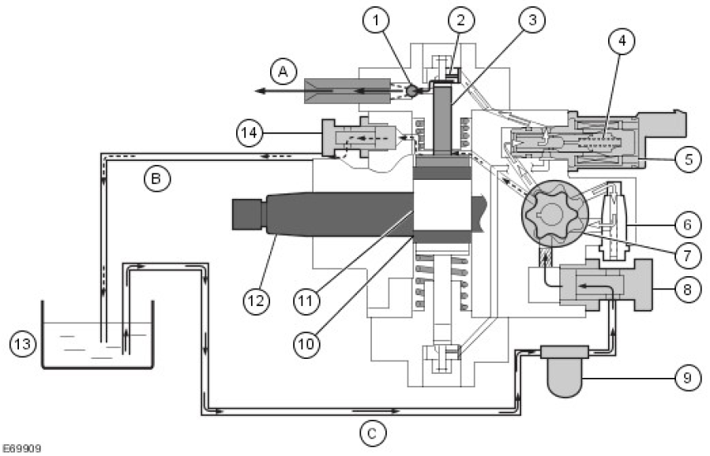

Specifications
Torque Specifications
| Description | Nm | lb-ft |
|---|---|---|
| Fuel injector clamp bolt | A | -- |
| High-pressure fuel supply line unions | ||
| Stage 1 | 5 | 4 |
| Stage 2 | 35 | 26 |
| Fuel pressure relief valve | A | -- |
| Fuel pump high-pressure fuel supply line bracket bolts | 10 | 7 |
| Fuel pressure relief valve spigot | 20 | 15 |
| Fuel rail to cylinder head | ||
| Stage 1 | 8 | 16 |
| Stage 2 | 23 | 17 |
| Fuel pump bolts | 23 | 17 |
| Fuel pump drive gear bolts | 33 | 24 |
| Fuel pump drive gear nut | 64 | 47 |
A = Refer to the procedure for the correct torque sequence
Published: Jan 23, 2007
Fuel Injection Component Cleaning
Pneumatic vacuum gun 1.
 WARNING: Do not carry out any repairs to the fuel system with the engine running. The fuel
pressure within the system can be as high as 1700 bar (24,656 lb-sq-in). Failure to follow this instruction
may result in personal injury.
WARNING: Do not carry out any repairs to the fuel system with the engine running. The fuel
pressure within the system can be as high as 1700 bar (24,656 lb-sq-in). Failure to follow this instruction
may result in personal injury.
WARNING: Do not smoke or carry lighted tobacco or open flame of any type when working on or
near any fuel related components. Highly flammable vapors are always present and may ignite. Failure to
follow these instructions may result in personal injury.
WARNING: If fuel contacts the eyes, flush the eyes with cold water or eyewash solution and seek
immediate medical attention.
WARNING: Place the vehicle in a well ventilated, quarantined area and arrange ' No Smoking/Petrol
Fumes' signs about the vehicle.
WARNING: Wait at least 30 seconds after the engine stops before commencing any repair to the
high-pressure fuel injection system. Failure to follow this instruction may result in personal injury.
WARNING: Wash hands thoroughly after fuel handling, as prolonged contact may cause irritation.
Should irritation develop, seek medical attention.
WARNING: Do not carry or operate cellular phones when working on or near any fuel related
components. Highly flammable vapors are always present and may ignite. Failure to follow these
instructions may result in personal injury.
 CAUTION: Before using the cleaning fluid, protect all electrical components and connectors with
lint-free non-flocking material.
CAUTION: Before using the cleaning fluid, protect all electrical components and connectors with
lint-free non-flocking material.
CAUTION: Make sure that all parts removed from the vehicle are placed on the lint-free non-flocking
material.
CAUTION: Make sure that any protective clothing worn is clean and made from lint-free non-flocking
material.
CAUTION: Make sure that clean non-plated tools are used. Clean tools using a new brush that will
not lose its bristles and fresh cleaning fluid, prior to starting work on the vehicle.
CAUTION: Use a steel topped workbench and cover it with clean, lint-free non-flocking material.
CAUTION: Make sure the workshop area in which the vehicle is being worked on is as clean and as
dust free as possible. Foreign matter from work on clutches, brakes or from machining or welding
operations can contaminate the fuel system and may result in later malfunction.
Using a new brush that will not lose its bristles, brush cleaning fluid onto the components being removed and onto the surrounding area.
- Using a pneumatic vacuum gun, remove all traces of cleaning fluid and foreign material.
- Dispose of any used cleaning fluid and the brush after completing the repair.
Published: Jan 8, 2007
Fuel Charging and Controls
COMPONENT LOCATION

| Item | Part Number | Description |
|---|---|---|
| 1 | High-pressure line | |
| 2 | Leak-off pipe | |
| 3 | Fuel injection line | |
| 4 | Fuel injector | |
| 5 | Pressure limiting valve | |
| 6 | Fuel rail | |
| 7 | Volume Control Valve (VCV) | |
| 8 | Fuel pressure sensor | |
| 9 | Fuel temperature sensor | |
| 10 | High-pressure fuel pump | |
| 11 | Fuel return |
OVERVIEW
The 2.4 liter diesel engine is equipped with a high-pressure common rail fuel injection system. With this fuel injection process, a high-pressure fuel pump delivers a uniform level of pressure to a shared fuel rail (also known as a common rail), which serves all 4 fuel injectors. Pressure is controlled to the optimum level for smooth operation, up to a pressure of 1600 bar.
The system supports a pre-injection (pilot) phase, which reduces combustion noise and mechanical load.
Fuel injection pressure is generated independently of engine speed and fuel injection events. The fuel injection timing and volume are calculated by the Engine Control Module (ECM), which then energizes the appropriate solenoid actuated injector.
The common rail fuel injection system has the following features:
- High fuel injection pressures of up to 1600 bar for greater atomisation of fuel (increasing performance and lowering emissions)
- Variable injection to optimise combustion in all engine operating conditions
- Low tolerances and high precision throughout the life of the system
The fuel system is divided into 2 sub systems:
- Low-pressure system
- High-pressure system
The LP system features the following components:
- Transfer pump (located in the high-pressure pump)
- Fuel filter
- Fuel cooler
The HP system features the following components:
- High-pressure fuel pump
- Fuel rail
- High-pressure fuel pipes
- Injectors
LOW-PRESSURE SYSTEM
Transfer Pump
The transfer pump is integral to the high-pressure fuel pump and is used to draw fuel from the fuel tank via the fuel filter (for more information refer to the high-pressure fuel pump section).
The suction pressure of the transfer pump is -30 to -20 Kpa.
Fuel Filter

The canister type fuel filter is located forward of the Right Hand (RH) rear wheel and is protected against damage by a steel plate. For additional information, refer to Fuel Tank and Lines - 2.4L Duratorq-TDCi (Puma) Diesel (310-01 Fuel Tank and Lines)
Fuel Cooler

The water cooled fuel cooler is located behind the Left Hand (LH) front wheel. The cooler has a coolant system connection to aid heat transfer. For additional information, refer to Fuel Tank and Lines - 2.4L Duratorq-TDCi (Puma) Diesel (310-01 Fuel Tank and Lines)
HIGH-PRESSURE SYSTEM

| Item | Part Number | Description |
|---|---|---|
| A | Fuel return from high-pressure pump | |
| B | High-pressure line | |
| C | Fuel injection line | |
| D | Leak-off pipe | |
| E | Fuel return to fuel tank | |
| F | Fuel supply | |
| 1 | High-pressure pump | |
| 2 | Fuel rail | |
| 3 | Fuel injector | |
| 4 | Pressure limiting valve | |
| 5 | T-piece | |
| 6 | Fuel cooler | |
| 7 | Fuel tank | |
| 8 | Filling level sensor unit | |
| 9 | Fuel filter |
The fuel is drawn from the fuel tank via the fuel filter by means of the transfer pump integrated in the high-pressure pump. The high-pressure pump pressurizes the fuel and forces it into the fuel rail. The fuel pressure required for any given situation is available for the fuel injectors for each injection process. Fuel leaking from the injectors and/or returning fuel from the high-pressure pump are fed back to the fuel tank.
High-Pressure fuel Pump

| Item | Part Number | Description |
|---|---|---|
| 1 | Volume Control Valve (VCV) | |
| 2 | Fuel temperature sensor |
The high-pressure fuel pump provides the interface between the low and the high-pressure systems. Its function is to provide sufficient pressurized fuel under all operating conditions and for the entire service life of the vehicle.
The fuel pump is located under the intake manifold and is driven by the timing chain at the front of the engine. The pump includes a transfer pump, a high-pressure pump, a VCV and a fuel temperature sensor.
The high-pressure pump receives fuel at transfer pressure from the transfer pump and increases the fuel pressure. The high-pressure fuel is then transferred from the high-pressure pump to the fuel rail.

| Item | Part Number | Description |
|---|---|---|
| A | High-pressure fuel to fuel rail | |
| B | Fuel return | |
| C | Fuel supply | |
| 1 | High-pressure chamber outlet valve | |
| 2 | High-pressure chamber inlet valve | |
| 3 | Pump plunger | |
| 4 | VCV return spring | |
| 5 | VCV | |
| 6 | Admission pressure control valve (pump internal pressure) | |
| 7 | Transfer pump | |
| 8 | Fuel inlet | |
| 9 | Fuel filter | |
| 10 | Eccentric cam ring | |
| 11 | Eccentric cam | |
| 12 | Drive shaft | |
| 13 | Fuel tank | |
| 14 | Fuel overflow valve |
The transfer pump draws fuel out of the fuel tank through the fuel inlet (8). The pump internal pressure is adjusted through the admission-pressure control valve (6), ensuring that sufficient lubrication and cooling are always provided for the high-pressure pump components. The excess fuel is transferred to the inlet side of the transfer pump (7) through the admission-pressure control valve, with a portion of the fuel being transferred to the VCV (5) from the transfer pump. The fuel quantity delivered to the high-pressure chambers is determined by the opening cross-section of the VCV. The small restriction bore in the fuel overflow valve (14) provides for automatic bleeding of the high- pressure pump. The entire low-pressure system is designed to allow a defined quantity of fuel to flow back into the fuel tank through the overflow pressure regulator tube, which assists cooling of the high-pressure pump.
A total of 2 high-pressure chambers (1 and 2), each with a pump plunger (3), are used for high-pressure generation. The drive for the pump plungers is through an eccentric cam (11), which is in turn driven by the drive shaft (12). The high-pressure pump permanently generates the high system pressure for the fuel rail.
Principle of High-Pressure Generation

| Item | Part Number | Description |
|---|---|---|
| A | Pump plunger 1 | |
| B | Pump plunger 2 | |
| C | To fuel rail | |
| 1 | Inlet valve | |
| 2 | Outlet valve | |
| 3 | Eccentric cam | |
| 4 | Eccentric cam ring | |
| 5 | Fuel metering valve | |
| 6 | Drive shaft |
The rotary movement of the drive shaft (6) is converted to reciprocating movement by the eccentric cam (3). The eccentric cam ring (4) transfers the reciprocating movement to the pump plungers (1 and 2).
The pump plungers are offset by 180 degrees. This means that during a reciprocating movement, pump plunger 1 performs exactly the opposite movement to pump plunger 2.
When the eccentric cam produces an upward stroke, pump plunger 1 moves in the direction of Top Dead Center (TDC), thus compressing the fuel and delivering it to the fuel rail via the outlet valve (2). The inlet valve (1) is pressed into its seat by the delivery pressure. Pump plunger 2 is moved by the tension spring force in the direction of Bottom Dead Center (BDC). Due to the high pressure in the fuel rail, the outlet valve is pressed into its seat. The pump internal pressure opens th inlet valve and fuel flows into the high-pressure chamber.
When the eccentric cam produces a downward stroke, the process is reversed.
The VCV is located on the high-pressure fuel pump. The valve regulates the fuel supply (and hence the quantity of fuel) from the transfer pump to the high-pressure fuel pump elements, depending on the fuel pressure in the rail. This makes it possible to match the delivery of the high-pressure fuel pump to the requirements of the engine from the
low-pressure side. The quantity of fuel flowing back to the main fuel supply line is kept to a minimum. In addition, this adjustment reduces the power consumption of the high-pressure fuel pump, improving the efficiency of the engine. For additional information, refer to Electronic Engine Controls - 2.4L Duratorq-TDCi (Puma) Diesel (303-14 Electronic Engine Controls)
After replacing the high-pressure pump and/or the ECM, the VCV must be calibrated with the aid of approved Land Rover diagnostic equipment.
The fuel temperature sensor is also located on the high-pressure fuel pump. The ECM monitors the fuel temperature constantly so it can respond correctly to changes in fuel density in relation to fuel temperature. For additional information, refer to Electronic Engine Controls - 2.4L Duratorq-TDCi (Puma) Diesel (303-14 Electronic Engine Controls)
If the fuel temperature sensor is disconnected the engine will operate at reduced power and a DTC will be triggered.
Fuel Rail

| Item | Part Number | Description |
|---|---|---|
| 1 | Fuel pressure sensor | |
| 2 | Pressure limiting valve | |
| 3 | Fuel rail |
The fuel rail performs the following functions:
- Stores fuel under high pressure
- Minimizes pressure fluctuations
Pressure fluctuations are induced in the high-pressure fuel system by operating movements in the high-pressure chambers of the fuel pump and the opening and closing of the solenoid valves on the fuel injectors. Consequently, the fuel rail is designed in such a way that it has sufficient volume to minimize pressure fluctuations, but low enough volume to be able to build up the fuel pressure required for a quick start in the shortest time possible.
The fuel supplied by the high-pressure pump passes through a high-pressure line to the high-pressure accumulator. The fuel is then sent to the individual fuel injectors via the 4 injector tubes, which are all the same length. When fuel is taken from the fuel rail for an injection process, the pressure in the fuel rail is kept almost constant.
The pressure limiting valve opens at a fuel pressure of approximatly 2000 bar. It serves as a safety device in the case of malfunctions in the high-pressure system, preventing damage due to excessive pressure. The valve operates as a disposable unit and must be replaced after a single trigger, as the valve can no longer be guaranteed leak-free. Triggering of the pressure limiting valve is detected by the ECM, whereupon a corresponding Diagnostic Trouble Code (DTC) is set and the Malfunction Indicator Lamp (MIL) is actuated.
The fuel rail pressure sensor is located in the end of the fuel rail. The sensor measures the pressure of the fuel in the fuel rail. This input is then used by the ECM to control the amount of fuel delivered to the fuel rail. For additional information, refer to Electronic Engine Controls - 2.4L Duratorq-TDCi (Puma) Diesel (303-14 Electronic Engine Controls)
If the pressure sensor is disconnected the engine will operate at reduced power and a DTC will be triggered. The sensor is not serviceable, and will come as part of a new rail with the limitting valve.
Fuel Injectors

| Item | Part Number | Description |
|---|---|---|
| A | Fuel injector nozzle | |
| B | Hydraulic servo system | |
| C | Solenoid valve | |
| 1 | Combustion chamber seal | |
| 2 | Electrical connection - solenoid valve | |
| 3 | High-pressure fuel line connection |
The 4 fuel injectors are located in the cylinder head, between the 4 valves in each cylinder. Each injector is sealed into the cylinder head with a copper washer. Each injector has an electrical connector for power supply and connections to the ECM. The fuel injectors are operated directly by the ECM for fuel metering (start of injection and quantity of fuel injected). The top of each injector is fitted with a fuel return pipe, which allows fuel used in the operation of the injector to return to the tank.
Each electronic injector has a solenoid valve, which when energised, allows a ball valve to lift off its seat. This allows pressurised fuel to lift a needle valve in the injector nozzle and spray a finely atomised jet of fuel into the cylinder. Fuel that spills past the ball valve is directed into a return line, which is connected to the fuel return from the high- pressure fuel pump.
Each injector solenoid is controlled separately by the ECM, which provides an earth path to open the injector nozzle at the correct time and for a calculated period to provide a metered injection of fuel into the cylinder. The ECM uses signals from other sensors and a programmed fuelling strategy to ensure that the precise amount of fuel is injected at the correct timing for maximum fuel efficiency and minimum emissions.
Fuel Injector Solenoid Valve

| Item | Part Number | Description |
|---|---|---|
| 1 | ECM | |
| 2 | Coil | |
| 3 | Solenoid armature | |
| 4 | Solenoid valve |
The ECM applies current to the injector solenoid valves in 3 stages:
- 18 amps
- 2. 8 amps
- 3. 4 amps
At the beginning of an injection process, the solenoid valve is actuated with a higher pick-up current so that it opens quickly. After a short period of time, the pick-up current is reduced to a low holding current.
To ensure optimum fuel metering, the ECM must be informed of a change of injector through the input of a 16-digit identification number. Inside the hydraulic servo system there are various restrictions with extremely small diameters, which have specific manufacturing tolerances. These manufacturing tolerances are given as part of the identification number, which is located on the housing of the fuel injector.

| Item | Part Number | Description |
|---|---|---|
| 1 | Solenoid valve | |
| 2 | 16-digit identification number | |
| 3 | Connection for leak-off pipe |
- Increased black smoke formation
- Irregular idling
- Increased combustion noise
Furthermore, once new ECM software has been loaded with the approved Land Rover diagnostic equipment, the fuel injectors must also be configured.
The ECM detects injector faults based on the power consumption of the solenoid valves. In the event of a fuel injector failure, any of the following symptoms may be observed:
- Engine misfire
- Idle faults
- Reduced engine performance
- Reduced fuel economy
- Difficult cold start
- Difficult hot start
- Increased smoke emissions
Published: Mar 12, 2007
Fuel Charging and Controls
Overview
This section covers the fuel system from the fuel filter to the fuel injectors, and includes the fuel rail and pump.
For information on the operation of the systems:
Fuel Charging and Controls
Fuel Tank and Lines - 2.4L Duratorq-TDCi (Puma) Diesel
Inspection and Verification
WARNING: Make sure that all suitable safety precautions are observed when carrying out any work
on the fuel system. failure to observe this warning may result in personal injury.
CAUTION: Make sure that absolute cleanliness is observed when working with these components.
Always install blanking plugs to any open orifices or lines. failure to follow this instruction may result in
damage to the vehicle.
- Verify the customer concern.
- Visually inspect for obvious signs of mechanical or electrical damage.
| Mechanical | Electrical |
|---|---|
|
|
- If an obvious cause for an observed or reported concern is found, correct the cause (if possible) before proceeding to the next step.
- Use the approved diagnostic system or a scan tool to retrieve any diagnostic trouble codes (DTCs) before moving onto the symptom chart or DTC index.
Make sure that all DTCs are cleared following rectification.
Make sure that all DTCs are cleared following rectification.
Symptom Chart
| Symptom | Possible causes | Action |
|---|---|---|
| Engine cranks, but does not start |
|
Check that the IFS has not tripped. Check the main ECM relay
and circuits, refer to the electrical guides. Check the fuel level and
condition. Draw off approximately 1 ltr (2.11 pints) of fuel and
allow to stand for 1 minute. Check to make sure there is no
separation of the fuel indicating water or other liquid in the fuel.
Check the intake air system for leaks. Check the low-pressure fuel
system for leaks/damage. Check the fuel filter, check for DTCs
indicating a fuel suction control valve fault. Check the fuel injection
pump: Fuel Injection Pump Check the CKP sensor circuits. Refer to the electrical guides. Install a new CKP sensor if necessary. |
| Difficult to start |
|
Crankshaft Position (CKP) Sensor (18.30.12) Check the glow plug circuits. Refer to the electrical guides. Check the fuel level/condition. Draw off approximately 1 ltr (2.11 pints) of fuel and allow to stand for 1 minute. Check to make sure there is no separation of the fuel indicating water or other liquid in the fuel. Check the intake air system for leaks. Check the low-pressure fuel system for leaks/damage. Check the fuel filter, check for DTCs indicating a fuel suction control valve fault. For EGR valve checks: Engine Emission Control |
| Rough idle |
|
Check the intake air system for leaks. Check the fuel
level/condition. Draw off approximately 1 ltr (2.11 pints) of fuel and
allow to stand for 1 minute. Check to make sure there is no
separation of the fuel indicating water or other liquid in the fuel.
Check the low-pressure fuel system for leaks/damage. Check the
fuel filter, check for DTCs indicating a fuel suction control valve
fault. For EGR valve checks: Engine Emission Control |
| Lack of power when accelerating |
|
Check the intake air system for leakage or restriction. Check for a
blockage/restriction in the exhaust system, install new
components as necessary: Catalytic Converter (17.50.01) Check for DTCs indicating a fuel pressure fault. For EGR valve checks: Engine Emission Control For turbocharger actuator checks: Turbocharger (19.42.01) |
| Engine stops/stalls |
|
Check the intake air system for leaks. Check the fuel
level/condition. Draw off approximately 1 ltr (2.11 pints) of fuel and
allow to stand for 1 minute. Check to make sure there is no
separation of the fuel indicating water or other liquid in the fuel.
Check the fuel system for leaks/damage. Check for DTCs
indicating a fuel suction control valve fault. For EGR valve checks: Engine Emission Control |
| Engine judders |
|
Check the fuel level/condition. Draw off approximately 1 ltr (2.11
pints) of fuel and allow to stand for 1 minute. Check to make sure
there is no separation of the fuel indicating water or other liquid in
the fuel. Check the intake air system for leaks. Check the low-
pressure fuel system for leaks/damage. Check the high-pressure
fuel system for leaks. Check for DTCs indicating a fuel suction
control valve fault. Check the fuel injection pump: Fuel Injection Pump |
| Excessive fuel consumption |
|
Check the low-pressure fuel system for leaks/damage. Check for
DTCs indicating a fuel suction control valve fault. Check the fuel
temperature sensor, fuel injection pump, etc. for leaks. Check for
injector DTCs. For EGR valve checks: Engine Emission Control |
DTC Index
Electronic Engine Controls
| DTC | Description | Possible causes | Action |
|---|---|---|---|
| P008807 | Fuel rail/system pressure - too high |
|
Check for related DTCs. Rectify as necessary. Clear the DTCs and test for normal operation. Check the fuel rail pressure sensor and circuits. Refer to the electrical guides. The fuel rail pressure sensor cannot be serviced separately. Install a new fuel rail if necessary. Fuel Rail (19.60.04) Check the fuel suction control valve and circuits. Refer to the electrical guides. The fuel suction control valve is not serviceable separately. Install a new fuel injection pump if necessary. Fuel Injection Pump Clear the DTCs and carry out a road test to confirm repair. |
| P008809 | Fuel rail/system pressure - too high |
|
Check for related DTCs. Rectify as necessary. Clear the DTCs and test for normal operation. Check the fuel rail pressure sensor and circuits. Refer to the electrical guides. The fuel rail pressure sensor cannot be serviced separately. Install a new fuel rail if necessary. Fuel Rail (19.60.04) Check the fuel suction control valve and circuits. Refer to the electrical guides. The fuel suction control valve is not serviceable separately. Install a new fuel injection pump if necessary. Fuel Injection Pump Clear the DTCs and carry out a road test to confirm repair. |
| P00897A | Fuel pressure regulator performance |
|
The fuel rail pressure limiting valve operates as
a disposable item in the event of excess system
pressure. Once activated the valve cannot be
guaranteed leak free and should be replaced.
Install a new fuel rail pressure limiting valve. Fuel Pressure Relief Valve |
| P009111 | Fuel pressure regulator control circuit - circuit short to ground |
|
Check the fuel suction control valve and circuits.
Refer to the electrical guides. The fuel suction
control valve is not serviceable separately.
Install a new fuel injection pump if necessary. Fuel Injection Pump Clear the DTCs and test for normal operation. |
| P009112 | Fuel pressure regulator control circuit - circuit short to battery |
|
Check the fuel suction control valve and circuits.
Refer to the electrical guides. The fuel suction
control valve is not serviceable separately.
Install a new fuel injection pump if necessary. Fuel Injection Pump Clear the DTCs and test for normal operation. |
| P009211 | Fuel pressure regulator control circuit - circuit short to ground |
|
Check the fuel suction control valve and circuits.
Refer to the electrical guides. The fuel suction
control valve is not serviceable separately.
Install a new fuel injection pump if necessary. Fuel Injection Pump Clear the DTCs and test for normal operation. |
| P009212 | Fuel pressure regulator control circuit - circuit short to battery |
|
Check the fuel suction control valve and circuits.
Refer to the electrical guides. The fuel suction
control valve is not serviceable separately.
Install a new fuel injection pump if necessary. Fuel Injection Pump Clear the DTCs and test for normal operation. |
| P01802F | Fuel temperature sensor A circuit - signal erratic |
|
Check the fuel temperature sensor and circuits.
Refer to the electrical guides. The fuel
temperature sensor is not serviceable
separately. Install a new fuel injection pump if
necessary. Fuel Injection Pump Clear the DTCs and test for normal operation. |
| P018011 | Fuel temperature sensor A circuit - circuit short to ground |
|
Check the fuel temperature sensor and circuits.
Refer to the electrical guides. The fuel
temperature sensor is not serviceable
separately. Install a new fuel injection pump if
necessary. Fuel Injection Pump Clear the DTCs and test for normal operation. |
| P018015 | Fuel temperature sensor A circuit - circuit short to battery or open |
|
Check the fuel temperature sensor and circuits.
Refer to the electrical guides. The fuel
temperature sensor is not serviceable
separately. Install a new fuel injection pump if
necessary. Fuel Injection Pump Clear the DTCs and test for normal operation. |
| P019011 | Fuel rail pressure sensor A circuit - circuit short to ground |
|
Check the fuel rail pressure sensor and circuits.
Refer to the electrical guides. The fuel rail
pressure sensor is not serviceable separately.
Install a new fuel rail if necessary. Fuel Rail (19.60.04) Clear the DTCs and test for normal operation. |
| P019015 | Fuel rail pressure sensor A circuit - circuit short to battery or open |
|
Check the fuel rail pressure sensor and circuits.
Refer to the electrical guides. The fuel rail
pressure sensor is not serviceable separately.
Install a new fuel rail if necessary. Fuel Rail (19.60.04) Clear the DTCs and test for normal operation. |
| P019164 | Fuel rail pressure sensor A circuit range/performance - signal plausibility failure |
|
Check the fuel rail pressure sensor and circuits.
Refer to the electrical guides. The fuel rail
pressure sensor is not serviceable separately.
Install a new fuel rail if necessary. Fuel Rail (19.60.04) Clear the DTCs and test for normal operation. |
| P020011 | Injector circuit - circuit short to ground |
|
|
| P020012 | Injector circuit - circuit short to battery |
|
Check the injector and injector circuit. Refer to
the electrical guides. Install a new injector if
necessary. Fuel Injector (19.60.10) Clear the DTCs and test for normal operation. |
| P020100 | Cylinder 1 (injector 1) circuit / open |
|
Check the cylinder 1 injector and circuit. Refer
to the electrical guides. Install a new injector if
necessary. Fuel Injector (19.60.10) Clear the DTCs and test for normal operation. |
| P020200 | Cylinder 2 (injector 4) circuit / open |
|
Check the cylinder 2 injector and circuit. Refer
to the electrical guides. Install a new injector if
necessary. Fuel Injector (19.60.10) Clear the DTCs and test for normal operation. |
| P020300 | Cylinder 3 (injector 2) circuit / open |
|
Check the cylinder 3 injector and circuit. Refer
to the electrical guides. Install a new injector if
necessary. Fuel Injector (19.60.10) Clear the DTCs and test for normal operation. |
| P020400 | Cylinder 4 (injector 3) circuit / open |
|
Check the cylinder 4 injector and circuit. Refer
to the electrical guides. Install a new injector if
necessary. Fuel Injector (19.60.10) Clear the DTCs and test for normal operation. |
| P026100 | Cylinder 1 injector 1 circuit low |
|
Check the cylinder 1 injector and circuit. Refer
to the electrical guides. Install a new injector if
necessary. Fuel Injector (19.60.10) Clear the DTCs and test for normal operation. |
| P026400 | Cylinder 2 injector 4 circuit low |
|
Check the cylinder 2 injector and circuit. Refer
to the electrical guides. Install a new injector if
necessary. Fuel Injector (19.60.10) Clear the DTCs and test for normal operation. |
| P026700 | Cylinder 3 injector 2 circuit low |
|
Check the cylinder 3 injector and circuit. Refer
to the electrical guides. Install a new injector if
necessary. Fuel Injector (19.60.10) Clear the DTCs and test for normal operation. |
| P027000 | Cylinder 4 injector 3 circuit low |
|
Check the cylinder 4 injector and circuit. Refer
to the electrical guides. Install a new injector if
necessary. Fuel Injector (19.60.10) Clear the DTCs and test for normal operation. |
| P029C00 | Cylinder 1 balance - (injector 1) restricted |
|
Check the injector and surrounding area for evidence of fuel leakage. Disconnect the injector and check for evidence of fuel leakage in the connector. Rectify as necessary. Clear the DTCs. Reconnect the injector and start the engine. Allow to warm up and allow to idle (cylinder balance diagnosis is now active). If the DTC resets, check for blow-by etc. and rectify as necessary. Clear the DTCs and recheck. Carry out a compression test only if the DTC |
| P02A000 | Cylinder 2 balance - (injector 4) restricted |
|
Fuel Injector (19.60.10) Clear the DTCs and test for normal operation. |
| P02A400 | Cylinder 3 balance - (injector 2) restricted |
|
Check the injector and surrounding area for
evidence of fuel leakage. Disconnect the injector
and check for evidence of fuel leakage in the
connector. Rectify as necessary. Clear the
DTCs. Reconnect the injector and start the
engine. Allow to warm up and allow to idle
(cylinder balance diagnosis is now active). If the
DTC resets, check for blow-by etc. and rectify
as necessary. Clear the DTCs and recheck.
Carry out a compression test only if the DTC
resets. If the above tests are all within range,
install a new injector. Fuel Injector (19.60.10) Clear the DTCs and test for normal operation. |
| P02A800 | Cylinder 4 balance - (injector 3) restricted |
|
Check the injector and surrounding area for
evidence of fuel leakage. Disconnect the injector
and check for evidence of fuel leakage in the
connector. Rectify as necessary. Clear the
DTCs. Reconnect the injector and start the
engine. Allow to warm up and allow to idle
(cylinder balance diagnosis is now active). If the
DTC resets, check for blow-by etc. and rectify
as necessary. Clear the DTCs and recheck.
Carry out a compression test only if the DTC
resets. If the above tests are all within range,
install a new injector. Fuel Injector (19.60.10) Clear the DTCs and test for normal operation. |
| P062B16 | Internal control module fuel injector control performance - circuit voltage below threshold |
|
Check the injector and surrounding area for
evidence of fuel leakage. Disconnect the injector
and check for evidence of fuel leakage in the
connector. Rectify as necessary. Clear the
DTCs. Reconnect the injector and start the
engine. Allow to warm up and allow to idle
(cylinder balance diagnosis is now active). If the
DTC resets, check for blow-by etc. and rectify
as necessary. Clear the DTCs and recheck.
Carry out a compression test only if the DTC
resets. If the above tests are all within range,
install a new injector. Fuel Injector (19.60.10) Clear the DTCs and test for normal operation. |
| P062B17 | Internal control module fuel injector control performance - circuit voltage above threshold |
|
Refer to the warranty and policy and procedures manual if the ECM is suspect. |
| P115A00 | Low fuel level - forced limited power |
|
Refer to the warranty and policy and procedures manual if the ECM is suspect. |
| P115B00 | Low fuel level - forced engine shutdown |
|
Check that there is sufficient fuel in the tank.
Check the fuel level sensor and circuits. Refer to
the electrical guides. Install a new fuel level
sensor if necessary. Fuel Level Sender Clear the DTCs and test for normal operation. |
| P116900 | Fuel rail pressure sensor in range but high |
|
Check the fuel rail pressure sensor and circuits.
Refer to the electrical guides. The fuel rail
pressure sensor is not serviceable separately.
Install a new fuel rail if necessary. Fuel Rail (19.60.04) Clear the DTCs and test for normal operation. |
| P121C00 | Cylinder balance - injector leaking |
|
Check the injector and surrounding area for
evidence of fuel leakage. Disconnect the injector
and check for evidence of fuel leakage in the
connector. Rectify as necessary. Clear the
DTCs. Reconnect the injector and start the
engine. Allow to warm up and allow to idle
(cylinder balance diagnosis is now active). If the
DTC resets, check for blow-by etc. and rectify
as necessary. Clear the DTCs and recheck.
Carry out a compression test only if the DTC
resets. If the above tests are all within range,
install a new injector. Fuel Injector (19.60.10) |
| P129300 | Injector high side open - bank 1 - cylinders 1 or 4 (injectors 1 or 3) |
|
Check the fuel injectors and circuits. Refer to
the electrical guides. Install a new injector if
necessary. Fuel Injector (19.60.10) Clear the DTCs and test for normal operation. |
| P129400 | Injector high side open - bank 2 - cylinders 2 or 3 (injectors 4 or 2) |
|
Check the fuel injectors and circuits. Refer to
the electrical guides. Install a new injector if
necessary. Fuel Injector (19.60.10) Clear the DTCs and test for normal operation. |
| P167B00 | Fuel injector learning not done |
|
Run pilot correction learning function in line with service procedures. Clear the DTCs and test for normal operation. Refer to the warranty and policy and procedures manual if the ECM is suspect. |
| P167B41 | Fuel injector learning not done - general checksum failure |
|
Clear the DTC. Start the engine and retest. Refer to the warranty policy and procedures manual if the ECM is suspect. |
| P214716 | Fuel injector group A supply voltage circuit low injector boost voltage too low |
|
Clear the DTC. Start the engine and retest. Refer to the warranty policy and procedures manual if the ECM is suspect. |
| P214817 | Fuel injector group A supply voltage circuit high - injector boost voltage too high |
|
Clear the DTC. Start the engine and retest. Refer to the warranty policy and procedures manual if the ECM is suspect. |
| Fuel pump A low flow / | Fuel supply pump insufficient | Check for related DTCs. Rectify as necessary. Clear the DTCs and test for normal operation. Check the fuel suction control valve and circuits. Refer to the electrical guides. The fuel suction | |
| P263507 | Install a new fuel injection pump if necessary. Fuel Injection Pump Clear the DTCs and test for normal operation. |
||
| P268B00 | High-pressure fuel pump calibration not learned/programmed | Pump learning procedure not run | Run pump learning procedure |
| P268C00 | Cylinder 1 (injector 1) data incompatible |
|
Re-enter the injector codes using the approved diagnostic system. Clear the DTCs, test for normal operation. |
| P268D00 | Cylinder 3 (injector 2) data incompatible |
|
|
| P268E00 | Cylinder 4 (injector 3) data incompatible |
|
|
| P268F00 | Cylinder 2 (injector 4) data incompatible |
|
Published: Jan 24, 2007
Fuel Injector (19.60.10)
Removal
WARNING: The spilling of fuel is unavoidable during this operation. Make sure that all necessary
precautions are taken to prevent fire and explosion.
WARNING: Do not carry or operate cellular phones when working on or near any fuel related
components. Highly flammable vapors are always present and may ignite. Failure to follow these
instructions may result in personal injury.
WARNING: Do not smoke or carry lighted tobacco or open flame of any type when working on or
near any fuel related components. Highly flammable vapors are always present and may ignite. Failure to
follow these instructions may result in personal injury.
WARNING: If fuel contacts the eyes, flush the eyes with cold water or eyewash solution and seek
immediate medical attention.
WARNING: Wash hands thoroughly after fuel handling, as prolonged contact may cause irritation.
Should irritation develop, seek medical attention.
WARNING: Do not carry out any repairs to the fuel system with the engine running. The fuel
pressure within the system can be as high as 2000 bar (29,008 lb-sq-in). Failure to follow this instruction
may result in personal injury.
CAUTION: Diesel fuel injection equipment is manufactured to very precise tolerances and fine
clearances. It is therefore essential that absolute cleanliness is observed when working with these
components. Always install new blanking plugs to any open orifices or lines. Failure to follow this
instruction may result in foreign matter ingress to the fuel injection system.
CAUTION: Always carry out the cleaning process before carrying out any repairs to the fuel
injection system components. Failure to follow this instruction may result in foreign matter ingress to the
fuel injection system.
CAUTION: Do not disconnect the fuel injector electrical connectors with the engine running. Failure
to follow this instruction may result in serious damage to the engine.
CAUTION: Make sure the workshop area in which the vehicle is being worked on is as clean and as
dust free as possible. Foreign matter from work on clutches, brakes or from machining or welding
operations can contaminate the fuel system and may result in later malfunction.
- Disconnect the battery ground cable.
For additional information, refer to Battery Disconnect and Connect - Remove the engine cover.
For additional information, refer to Engine Cover (12.30.50)
- Using the pneumatic vacuum gun, vacuum foreign material from the high-pressure fuel supply lines, the fuel
rails and the fuel injection pump.
For additional information, refer to Fuel Injection Component Cleaning -
CAUTION: Do not allow the unions to hit the olive ends of the high-pressure fuel supply
line as this may damage the ends of the line and allow foreign matter to enter the fuel injection
system.CAUTION: Make sure that all openings are sealed. Use new blanking caps.
Remove and discard the 2 high-pressure fuel supply lines.
 High-pressure fuel supply lines removal (E87373)
High-pressure fuel supply lines removal (E87373) - Release the fuel injector wiring harness.
- Disconnect the 2 fuel injector electrical connectors.
- Release the 2 clips.
 Fuel injector electrical connectors and clips (E87375)
Fuel injector electrical connectors and clips (E87375) -
CAUTION: Make sure that all openings are sealed. Use new blanking caps.
Release the fuel return line.
- Remove the 2 clips.
- Remove and discard the 2 O-ring seals.

- Remove the fuel injector clamp cover.

-
NOTE: Note the position of the fuel injector clamp.
Remove the fuel injector clamp.
- Remove and discard the bolt.
 Fuel injector clamp removal (E87377)
Fuel injector clamp removal (E87377) -
CAUTION: Make sure that all openings are sealed. Use new blanking caps.CAUTION: Make sure that both fuel injectors are removed. Failure to follow this instruction
may result in damage to the vehicle.
Remove the fuel injector.

- Remove and discard the sealing washers from both fuel injectors.

Installation
- If a new fuel injector is to be installed, record the fuel injector identification code.
- Install new sealing washers to both fuel injectors.
-
NOTE: Remove and discard the blanking caps.
Install the fuel injectors.

CAUTION: Make sure the fuel injector clamp is installed correctly. Failure to follow this
instruction may result in damage to the vehicle.
Install the fuel injector clamp.
- Stage 1: Tighten the new bolt to 6 Nm (4 lb.ft).
- Stage 2: Tighten a further 180 degrees.
- Install the fuel injector clamp cover.
-
NOTE: Remove and discard the blanking caps.NOTE: Clean the component mating faces.
Secure the fuel return line.
- Install new O-ring seals.
- Install the clips.
- Secure the fuel injector wiring harness.
- Connect the fuel injector electrical connectors.
- Secure the clips.
-
NOTE: Remove and discard the blanking caps.
Secure the high-pressure fuel supply lines.
- Stage 1: Tighten the unions to 5 Nm (4 lb.ft).
- Stage 2: Tighten the unions to 35 Nm (26 lb.ft).
High-pressure fuel supply lines installation (E87373) - Install the engine cover.
For additional information, refer to Engine Cover (12.30.50)
- Connect the battery ground cable.
For additional information, refer to Battery Connect - Carry out a fuel system leak test using the Land Rover approved diagnostic system.
- Carry out the fuel injector calibration procedure using the Land Rover approved diagnostic system.
Published: Jun 23, 2008
Fuel Injection Pump
Special Service Tools


Removal
WARNING: The spilling of fuel is unavoidable during this operation. Make sure that all necessary
precautions are taken to prevent fire and explosion.
WARNING: Do not carry or operate cellular phones when working on or near any fuel related
components. Highly flammable vapors are always present and may ignite. Failure to follow these
instructions may result in personal injury.
WARNING: Do not smoke or carry lighted tobacco or open flame of any type when working on or
near any fuel related components. Highly flammable vapors are always present and may ignite. Failure to
follow these instructions may result in personal injury.
WARNING: If fuel contacts the eyes, flush the eyes with cold water or eyewash solution and seek
immediate medical attention.
WARNING: Wash hands thoroughly after fuel handling, as prolonged contact may cause irritation.
Should irritation develop, seek medical attention.
WARNING: Do not carry out any repairs to the fuel system with the engine running. The fuel
pressure within the system can be as high as 2000 bar (29,008 lb-sq-in). Failure to follow this instruction
may result in personal injury.
CAUTION: Diesel fuel injection equipment is manufactured to very precise tolerances and fine
clearances. It is therefore essential that absolute cleanliness is observed when working with these
components. Always install new blanking plugs to any open orifices or lines. Failure to follow this
instruction may result in foreign matter ingress to the fuel injection system.
- Disconnect the battery ground cable.
For additional information, refer to Battery Disconnect and Connect - Remove the accessory drive component bracket.
For additional information, refer to Accessory Drive Component Bracket - Remove the brake vacuum pump.
For additional information, refer to Brake Vacuum Pump (70.50.19) -
WARNING: Do not work on or under a vehicle supported only by a jack. Always support the
vehicle on safety stands.
Raise and support the vehicle.
For additional information, refer to Lifting - Drain the cooling system.
For additional information, refer to Cooling System Draining, Filling and Bleeding (26.10.01) - Release the water pump.
- Remove the 4 bolts.
- Remove and discard the gasket.
 Water pump bolts removal (E89802)
Water pump bolts removal (E89802) - Release the wiring harness.

- Using the pneumatic vacuum gun, vacuum foreign material from the high-pressure fuel supply lines, the fuel
rails and the fuel injection pump.
For additional information, refer to Fuel Injection Component Cleaning -
CAUTION: Make sure that all openings are sealed. Use new blanking caps.
Release the fuel injection pump high-pressure fuel line.
- Remove the 2 bolts.
- Release the fuel pump high-pressure fuel line union.
 Fuel injection pump high-pressure fuel line removal (E85796)
Fuel injection pump high-pressure fuel line removal (E85796) -
CAUTION: Make sure that all openings are sealed. Use new blanking caps.
Disconnect the fuel injector to fuel injection pump line.
 Fuel injector to fuel injection pump line disconnect (E85798)
Fuel injector to fuel injection pump line disconnect (E85798) -
CAUTION: Make sure that all openings are sealed. Use new blanking caps.
Disconnect the fuel return line.

- Disconnect the fuel metering valve and the fuel temperature sensor.

-
CAUTION: Make sure that all openings are sealed. Use new blanking caps.
Remove and discard the fuel injection pump high-pressure fuel line.
 Fuel injection pump high-pressure fuel line removal (E85797)
Fuel injection pump high-pressure fuel line removal (E85797) - Using the special tool, remove the fuel injection pump drive gear cover.
- Install the special tools.


- Release the fuel injection pump drive gear.
- Remove the nut.
- Remove the 2 bolts.
 Fuel injection pump drive gear removal (E85794)
Fuel injection pump drive gear removal (E85794) - Remove 2 bolts from the fuel injection pump.
- Using the special tool, release the fuel injection pump.
- Remove the fuel injection pump.
- Remove and discard the O-ring seal.


Installation
- Install the fuel injection pump.
- Clean the component mating faces.
- Install a new O-ring seal.
- Install the fuel injection pump bolts.
- Secure the fuel injection pump.
- Tighten the bolts to 23 Nm (17 lb.ft).
Fuel injection pump bolts tightening (E73832) - Secure the fuel injection pump drive gear.
- Tighten the nut to 64 Nm (47 lb.ft).
- Tighten the bolts to 33 Nm (24 lb.ft).
Fuel injection pump drive gear tightening (E85794) - Remove the special tools.
- Using the special tool, install the fuel injection pump drive gear cover.
-
NOTE: Remove and discard the blanking caps.
Loosely install a new high-pressure fuel line.
- Loosely install the high-pressure pipe clamps.
- Install the fuel injection pump high-pressure fuel line.
- Tighten to 35 Nm (26 lb.ft).
Fuel injection pump high-pressure fuel line installation (E85797) - Secure the fuel injection pump high-pressure fuel line.
- Tighten to 10 Nm (7 lb.ft).
- Tighten to 35 Nm (26 lb.ft).
- Connect the fuel metering valve and the fuel temperature sensor.
-
NOTE: Remove and discard the blanking caps.
Connect the fuel return line.
- Secure the wiring harness to the inlet pipe.
- Install the water pump.
- Install a new gasket.
- Tighten to 23 Nm (17 lb.ft).
Water pump installation (E89802) - Fill and bleed the cooling system.
For additional information, refer to Cooling System Draining, Filling and Bleeding (26.10.01) - Install the brake vacuum pump.
For additional information, refer to Brake Vacuum Pump (70.50.19) - Install the accessory drive component bracket.
For additional information, refer to Accessory Drive Component Bracket - Connect the battery ground cable.
For additional information, refer to Battery Connect - Using the Land Rover approved diagnostic system carry out the fuel injection pump learn procedure.
Published: Jun 23, 2008
Fuel Metering Valve
Removal
WARNING: The spilling of fuel is unavoidable during this operation. Make sure that all necessary
precautions are taken to prevent fire and explosion.
WARNING: Do not carry or operate cellular phones when working on or near any fuel related
components. Highly flammable vapors are always present and may ignite. Failure to follow these
instructions may result in personal injury.
WARNING: Do not smoke or carry lighted tobacco or open flame of any type when working on or
near any fuel related components. Highly flammable vapors are always present and may ignite. Failure to
follow these instructions may result in personal injury.
WARNING: If fuel contacts the eyes, flush the eyes with cold water or eyewash solution and seek
immediate medical attention.
WARNING: Wash hands thoroughly after fuel handling, as prolonged contact may cause irritation.
Should irritation develop, seek medical attention.
WARNING: Do not carry out any repairs to the fuel system with the engine running. The fuel
pressure within the system can be as high as 2000 bar (29,008 lb-sq-in). Failure to follow this instruction
may result in personal injury.
CAUTION: Diesel fuel injection equipment is manufactured to very precise tolerances and fine
clearances. It is therefore essential that absolute cleanliness is observed when working with these
components. Always install new blanking plugs to any open orifices or lines. Failure to follow this
instruction may result in foreign matter ingress to the fuel injection system.
- Open the front door.
- Remove the front seat cushion assembly.
- Remove the battery cover.
- Disconnect the battery ground cable.
For additional information, refer to Battery Disconnect and Connect - Open the bonnet.
- Disconnect the fuel metering valve electrical connector.

- Remove the 2 fuel metering valve securing bolts.

- Remove the fuel metering valve.

- Using the pneumatic vacuum gun, vacuum foreign material from the high-pressure fuel supply lines, the fuel
rails and the fuel injection pump.
For additional information, refer to Fuel Injection Component Cleaning
Installation
- Install the fuel metering valve with new seal and gasket.
- Install the 2 fuel metering valve securing bolts.
- Stage 1 tighten bolts to 5 Nm (4 lb.ft).
- Stage 2 tighten bolts to 8 Nm (6 lb.ft).
Fuel metering valve securing bolts installation (E105076) - Connect fuel metering valve electrical connector.
- Close the bonnet.
- Connect the battery ground cable.
For additional information, refer to Battery Connect - Install the battery cover.
- Install the front seat cushion assembly.
- Close the front door.
- Using the Land Rover approved diagnostic system carry out the pump learn procedure found in the set-up and configuration section.
Published: Jun 24, 2008
Fuel Pressure Relief Valve
Removal
WARNING: The spilling of fuel is unavoidable during this operation. Make sure that all necessary
precautions are taken to prevent fire and explosion.
WARNING: Do not carry or operate cellular phones when working on or near any fuel related
components. Highly flammable vapors are always present and may ignite. Failure to follow these
instructions may result in personal injury.
WARNING: Do not smoke or carry lighted tobacco or open flame of any type when working on or
near any fuel related components. Highly flammable vapors are always present and may ignite. Failure to
follow these instructions may result in personal injury.
WARNING: If fuel contacts the eyes, flush the eyes with cold water or eyewash solution and seek
immediate medical attention.
WARNING: Wash hands thoroughly after fuel handling, as prolonged contact may cause irritation.
Should irritation develop, seek medical attention.
WARNING: Do not carry out any repairs to the fuel system with the engine running. The fuel
pressure within the system can be as high as 2000 bar (29,008 lb-sq-in). Failure to follow this instruction
may result in personal injury.
CAUTION: Diesel fuel injection equipment is manufactured to very precise tolerances and fine
clearances. It is therefore essential that absolute cleanliness is observed when working with these
components. Always install new blanking plugs to any open orifices or lines. Failure to follow this
instruction may result in foreign matter ingress to the fuel injection system.
- Disconnect the battery ground cable.
For additional information, refer to Battery Disconnect and Connect - Using the pneumatic vacuum gun, vacuum foreign material from the high-pressure fuel supply lines, the fuel
rails and the fuel injection pump.
For additional information, refer to Fuel Injection Component Cleaning - Remove the fuel spigot.

- Remove and discard the fuel pressure relief valve.
-
CAUTION: Make sure no damage to the fuel rail the mating faces occurs. Failure to follow
this instruction may result in damage to the components.
Remove and discard the gasket.
 Gasket (E66949)
Gasket (E66949)

Installation
-
CAUTION: Make sure no damage to the fuel rail the mating faces occurs. Failure to follow
this instruction may result in damage to the components.
Install a new gasket.
- Clean the component mating faces.
New Gasket (E66949) - Install a new fuel pressure relief valve.
- Tighten to 30 Nm (22 lb.ft).
- Draw a line on the corner of the fuel pressure relief valve (1) and on the side of the fuel rail (2).
- Draw a line (3) 3 mm (0.11 inches) from line (2).
- Tighten the fuel pressure relief valve and make sure that line (1) passes line (3).
- Tighten to 172 Nm (127 lb.ft).
 Tightening Fuel Pressure Relief Valve (E66978)
Tightening Fuel Pressure Relief Valve (E66978) - If line (1) does not pass line (3) remove the fuel pressure relief valve and inspect for contamination and thread damage to the fuel rail. Reassemble from step 2.
-
NOTE: Remove and discard the blanking caps.
Install the fuel spigot.


- Clean the component mating faces.
- Tighten to 20 Nm (15 lb.ft).
- Connect the battery ground cable.
For additional information, refer to Battery Connect - Carry out a fuel system leak test using the Land Rover approved diagnostic system.
Published: Jan 31, 2007
Fuel Rail (19.60.04)
Removal
WARNING: The spilling of fuel is unavoidable during this operation. Make sure that all necessary
precautions are taken to prevent fire and explosion.
WARNING: Do not carry or operate cellular phones when working on or near any fuel related
components. Highly flammable vapors are always present and may ignite. Failure to follow these
instructions may result in personal injury.
WARNING: Do not smoke or carry lighted tobacco or open flame of any type when working on or
near any fuel related components. Highly flammable vapors are always present and may ignite. Failure to
follow these instructions may result in personal injury.
WARNING: If fuel contacts the eyes, flush the eyes with cold water or eyewash solution and seek
immediate medical attention.
WARNING: Wash hands thoroughly after fuel handling, as prolonged contact may cause irritation.
Should irritation develop, seek medical attention.
WARNING: Do not carry out any repairs to the fuel system with the engine running. The fuel
pressure within the system can be as high as 2000 bar (29,008 lb-sq-in). Failure to follow this instruction
may result in personal injury.
CAUTION: Diesel fuel injection equipment is manufactured to very precise tolerances and fine
clearances. It is therefore essential that absolute cleanliness is observed when working with these
components. Always install new blanking plugs to any open orifices or lines. Failure to follow this
instruction may result in foreign matter ingress to the fuel injection system.
CAUTION: Always carry out the cleaning process before carrying out any repairs to the fuel
injection system components. Failure to follow this instruction may result in foreign matter ingress to the
fuel injection system.
CAUTION: Do not disconnect the fuel injector electrical connectors with the engine running. Failure
to follow this instruction may result in serious damage to the engine.
CAUTION: Make sure the workshop area in which the vehicle is being worked on is as clean and as
dust free as possible. Foreign matter from work on clutches, brakes or from machining or welding
operations can contaminate the fuel system and may result in later malfunction.
- Disconnect the battery ground cable.
For additional information, refer to Battery Disconnect and Connect - Remove the engine cover.
For additional information, refer to Engine Cover (12.30.50)
- Using the pneumatic vacuum gun, vacuum foreign material from the high-pressure fuel supply lines, the fuel
rails and the fuel injection pump.
For additional information, refer to Fuel Injection Component Cleaning -
CAUTION: Do not allow the unions to hit the olive ends of the high-pressure fuel supply
line as this may damage the ends of the line and allow foreign matter to enter the fuel injection
system.CAUTION: Make sure that all openings are sealed. Use new blanking caps.
Remove and discard the 4 high-pressure fuel supply lines.
 High-pressure fuel supply lines removal (E65814)
High-pressure fuel supply lines removal (E65814) -
CAUTION: Do not allow the unions to hit the olive ends of the high-pressure fuel supply
line as this may damage the ends of the line and allow foreign matter to enter the fuel injection
system.CAUTION: Make sure that all openings are sealed. Use new blanking caps.
Remove and discard the high-pressure fuel rail supply line.
- Release the clips.
- Remove the high-pressure fuel rail supply line.
 High-pressure fuel rail supply line removal (E87446)
High-pressure fuel rail supply line removal (E87446) -
CAUTION: Make sure that all openings are sealed. Use new blanking caps.
Disconnect the fuel rail pressure (FRP) sensor electrical connector and fuel return line.
- Disconnect the FRP sensor electrical connector.
- Disconnect the fuel rail return line.

- Remove the intake manifold.
For additional information, refer to Intake Manifold (30.15.02) - Remove the fuel rail.
- Remove the 2 bolts.
- Remove the bracket.
 Fuel rail removal (E65817)
Fuel rail removal (E65817)
Installation
WARNING: The spilling of fuel is unavoidable during this operation. Make sure that all necessary
precautions are taken to prevent fire and explosion.
WARNING: Do not carry or operate cellular phones when working on or near any fuel related
components. Highly flammable vapors are always present and may ignite. Failure to follow these
instructions may result in personal injury.
WARNING: Do not smoke or carry lighted tobacco or open flame of any type when working on or
near any fuel related components. Highly flammable vapors are always present and may ignite. Failure to
follow these instructions may result in personal injury.
WARNING: If fuel contacts the eyes, flush the eyes with cold water or eyewash solution and seek
immediate medical attention.
WARNING: Wash hands thoroughly after fuel handling, as prolonged contact may cause irritation.
Should irritation develop, seek medical attention.
WARNING: Do not carry out any repairs to the fuel system with the engine running. The fuel
pressure within the system can be as high as 2000 bar (29,008 lb-sq-in). Failure to follow this instruction
may result in personal injury.
CAUTION: Diesel fuel injection equipment is manufactured to very precise tolerances and fine
clearances. It is therefore essential that absolute cleanliness is observed when working with these
components. Always install new blanking plugs to any open orifices or lines. Failure to follow this
instruction may result in foreign matter ingress to the fuel injection system.
CAUTION: Always carry out the cleaning process before carrying out any repairs to the fuel
injection system components. Failure to follow this instruction may result in foreign matter ingress to the
fuel injection system.
CAUTION: Do not disconnect the fuel injector electrical connectors with the engine running. Failure
to follow this instruction may result in serious damage to the engine.
CAUTION: Make sure the workshop area in which the vehicle is being worked on is as clean and as
dust free as possible. Foreign matter from work on clutches, brakes or from machining or welding
operations can contaminate the fuel system and may result in later malfunction.
-
CAUTION: Only tighten the bolts finger-tight at this stage.NOTE: Clean the component mating faces.
Install the fuel rail.
- Install the bracket.
- Loosely install the bolts.
-
CAUTION: Maintain pressure on the high-pressure fuel supply line to keep the olives in
contact with the fuel injectors and the fuel rail cones while installing unions.CAUTION: Do not allow the unions to hit the olive ends of the high-pressure fuel supply
line as this may damage the ends of the high-pressure fuel supply line and allow foreign matter to
enter the fuel injection system.NOTE: CAUTION: Only tighten the unions finger-tight at this stage.
Remove and discard the blanking caps.
Loosely install the new high-pressure fuel rail supply line.
-
CAUTION: Maintain pressure on the high-pressure fuel supply line to keep the olives in
contact with the fuel injectors and the fuel rail cones while installing unions.
CAUTION: Do not allow the unions to hit the olive ends of the high-pressure fuel supply
line as this may damage the ends of the line and allow foreign matter to enter the fuel injection
system.
CAUTION: Only tighten the unions finger-tight at this stage.
Loosely install the new high-pressure fuel supply lines.
- Secure the fuel rail.
- Stage 1: Tighten the bolts to 8 Nm (6 lb.ft).
- Stage 2: Tighten the bolts to 23 Nm (17 lb.ft).
Fuel rail tightening (E65817) - Secure the high-pressure fuel supply lines.
- Stage 1: Tighten the unions to 5 Nm (4 lb.ft).
- Stage 2: Tighten the unions to 35 Nm (26 lb.ft).
High-pressure fuel supply lines tightening (E65814) - Secure the high-pressure fuel rail supply line.
- Stage 1: Tighten the unions to 5 Nm (4 lb.ft).
- Stage 2: Tighten the unions to 35 Nm (26 lb.ft).

- Tighten to 10 Nm (7 lb.ft).
- Install the intake manifold.
For additional information, refer to Intake Manifold (30.15.02) - Connect the FRP sensor electrical connector.
-
NOTE: Remove and discard the blanking caps.
Connect the fuel return line.
- Install the engine cover.
For additional information, refer to Engine Cover (12.30.50) - Connect the battery ground cable.
For additional information, refer to Battery Connect - Carry out a fuel system leak test using the Land Rover approved diagnostic system.